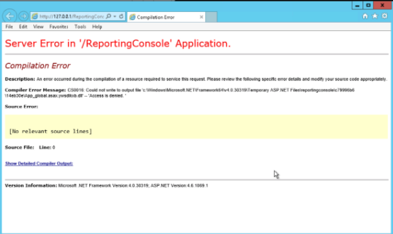

Summary: Opening the SI: Reports Console generates the following error. "CS0016: Could not write to output file 'c:\Windows\Microsoft.NET\Framework64\v4.0.30319\Temporary ASP.NET\reportingconsole\c79996b6\14eb30e\App_global.asax.ywsdikxb.dll' -- 'Access is denied'
Issue: Opening the SI: Reports Console generates the following error.
"CS0016: Could no write to output file 'c:\Windows\Microsoft.NET\Framework64\v4.0.30319\Temporary ASP.NET\reportingconsole\c79996b6\14eb30e\App_global.asax.ywsdikxb.dll' -- 'Access is denied'
Instructions:

In IIS Manager, in the advanced settings of the Application Pool, make sure "Process Model > Load User Profile" is set to "True".
- Run iisreset in the command prompt
- Should now be able to access the SI reporting site
Product: StealthINTERCEPT
Module: SI - Web Reporting
Versions: 3.4.2.61
Legacy Article ID: 1248